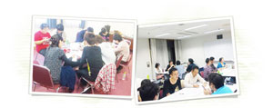

皆さんはこんな悩みを抱えていませんか？

・何を話して良いかわからない
・相手がいつもつまらなそうにしている
・会話が弾まない
・暗い表情だと言われる
・質問が思い浮かばない
人生は人間関係の連続です。家庭、友人関係、恋愛、ビジネス・・・もしこれらの悩みを抱えていたとしたら、人と接するたびにつらい思いをしてしまうかもしれません。
ビジネスの上ではコミュニケーション能力を重視する会社がほとんどです。
プライベートでは、飲み会が苦痛であったり、恋人とうまく話すことができず、
つらい思いをしてしまうかもしれません。
心理学の統計でも人間関係を築く力が乏しい人は、孤独感や対人不安が強く、
気分が優れないということがわかってきています。
その意味で人間関係を構築する力は
幸せな人生を歩む上で必須の能力であると言えるのではないでしょうか。
ではたくさんの人と充実した人間関係を築くために
私たちはどんな練習をすれば良いのでしょうか？
